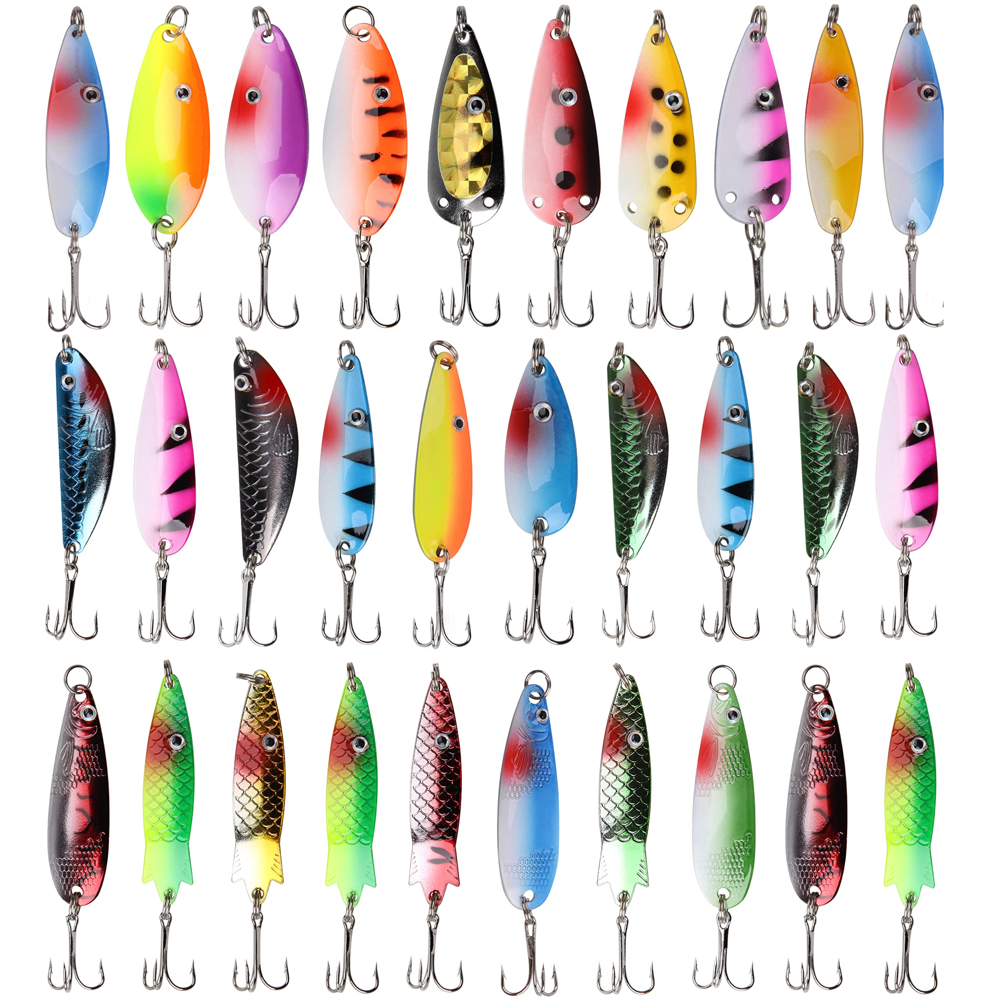

Cast a Mepps across a trout stream and reel it back. That's what everyone does. That's also why most anglers go home skunked while the old guy in the stained hat pulls fish after fish from the same water. Spinners and spoons have one job: flash and vibration. If you're not making them do that, you're just dragging metal through the water.

The Spinner Mistake Almost Everyone Makes
Too fast. Always too fast.
A spinner blade needs to spin, that's obvious. But it spins at retrieve speeds so slow you'll feel stupid doing it. Slow down until you can barely feel the vibration. Then slow down more. The ideal spinner retrieve feels like you're reeling through cold honey.
The test: Cast your spinner into shallow clear water where you can see it. Reel at your normal speed and watch the blade. Now slow down until the blade almost stops, that's too slow. Speed up just enough to make it spin consistently again. That's the speed. Most people are reeling twice that fast.
The Stop-and-Go Trick
Spinners and spoons both die on a steady retrieve. They come alive when you vary it.
Reel for three turns. Stop for one second. Reel for two turns. Stop. The lure flutters down during the pause, that's when fish hit. They follow the flash, lose it in the pause, then see it start again and commit.
This works especially well for pike and pickerel. They're curious and aggressive. A steady retrieve looks like prey running away. A stop-start retrieve looks like injured prey, and that's the one they eat.

Spoons Need a Different Game
Spoons don't have a spinning blade to do the work, they have a wobble, and that wobble comes from speed and rod tip action.
The classic spoon mistake is holding the rod tip low and steady. Point the rod at the water and reel. The spoon swims straight, no wobble, no flash, no fish.
Keep your rod tip up, twelve o'clock high. Reel with the tip up, then drop it to nine o'clock while you keep reeling. The spoon wobbles hard on the drop. That's the strike trigger. Raise and drop. Raise and drop.
A Dardevle on a steady retrieve is a piece of painted brass. A Dardevle on a pumping rod tip is a dying shad. Same lure. Completely different results.
Where to Cast Them
Most people cast straight out and reel straight back. That's fine for covering water. It's terrible for catching fish.
Spinners and spoons work best when you cast across current, not up or down. Let the current swing the lure in an arc, reel just fast enough to keep the blade spinning or the spoon wobbling. The natural swing does the rest. Fish sit in eddies and behind rocks; a straight retrieve misses them entirely.
On still water: cast parallel to weed lines, not perpendicular. Cast along drop-offs, not across them. A bass sitting on a weed edge sees prey moving along that edge all day, a lure coming from open water looks wrong.
- Rivers: Cast across current, let it swing through eddies
- Lakes: Work parallel to weed lines and drop-offs
- Lac Saint-Louis: Work the weed edges along Pointe-Claire shoreline
- Lachine Canal: Cast across the current at narrowing sections
Colour Matters Less Than You Think
Silver on sunny days. Gold on cloudy days. Copper in stained water. That's ninety percent of what you need to know.
The rest is confidence. Don't spend forty dollars on Japanese spinners with hand-painted scales. Spend forty dollars on gas money to drive to better water.
The One Rigging Rule
Tie direct. No swivels, no snaps, no leaders unless you're fishing for toothy fish like pike. A snap changes the action of a spoon. A swivel adds weight and kills the flutter.
- Spoons: Use a loop knot, the Rapala knot or a figure-eight loop. The spoon needs to swing free. A tight clinch knot locks it in place and kills the action.
- Spinners: Tie direct with a clinch knot. The blade does the work anyway.
- Pike fishing: A short wire or fluorocarbon leader is fine, just keep it under 12 inches.
When to Put Them Away
Spinners and spoons fail in heavy cover, they snag, they foul, they're the wrong tool for fishing docks or thick weed mats. Use a Texas rig for that.
They also struggle in super clear water with heavily pressured fish. Trout that see ten spinners a day learn to avoid them. Switch to a small jig or a fly.
But for covering water, finding active fish, and catching everything from panfish to pike, a spinner or spoon is hard to beat. Just slow down. Pick up the rod tip. Let the lure work.

Montreal's freshwater fishing community, sharing techniques, spots, and stories from the water since 2020.